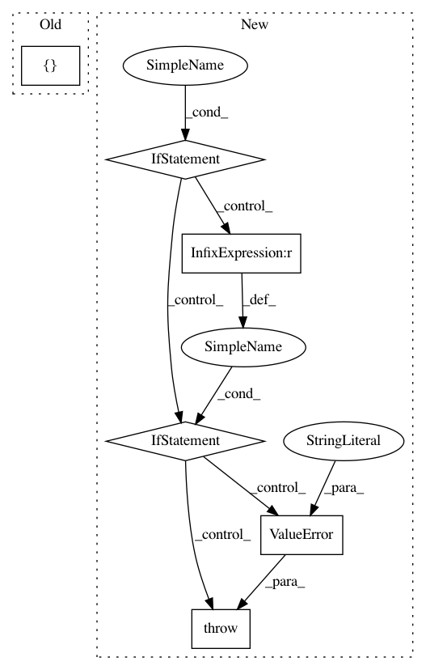

023331ec2a7b0086abfc81eca16c84a1692ee653,keras/layers/core.py,TimeDistributedDense,build,#TimeDistributedDense#Any#,1231
Before Change
super(TimeDistributedDense, self).__init__(**kwargs)
def build(self, input_shape):
self.input_spec = [InputSpec(dtype=K.floatx(),
shape=(None,) + input_shape[1:])]
input_dim = input_shape[2]
self.W = self.add_weight((input_dim, self.output_dim),
initializer=self.init,
After Change
This version performs the same function as Dropout, however it drops
entire 2D feature maps instead of individual elements. If adjacent pixels
within feature maps are strongly correlated (as is normally the case in
early convolution layers) then regular dropout will not regularize the
activations and will otherwise just result in an effective learning rate
decrease. In this case, SpatialDropout2D will help promote independence
between feature maps and should be used instead.
// Arguments
rate: float between 0 and 1. Fraction of the input units to drop.
data_format: "channels_first" or "channels_last".
In "channels_first" mode, the channels dimension
(the depth) is at index 1,
in "channels_last" mode is it at index 3.
It defaults to the `image_data_format` value found in your
Keras config file at `~/.keras/keras.json`.
In pattern: SUPERPATTERN
Frequency: 4
Non-data size: 6
Instances
Project Name: keras-team/keras
Commit Name: 023331ec2a7b0086abfc81eca16c84a1692ee653
Time: 2017-02-09
Author: francois.chollet@gmail.com
File Name: keras/layers/core.py
Class Name: TimeDistributedDense
Method Name: build
Project Name: ray-project/ray
Commit Name: 91535e910201dc403cb2b8644a75e1132bd712fe
Time: 2020-09-03
Author: krfricke@users.noreply.github.com
File Name: python/ray/tune/integration/keras.py
Class Name: TuneReporterCallback
Method Name: __init__
Project Name: ray-project/ray
Commit Name: d8f5b522655f2b848ba20817dd18d6e4aefb8a42
Time: 2020-04-10
Author: ed.nmi.oakes@gmail.com
File Name: python/ray/serve/api.py
Class Name:
Method Name: create_backend
Project Name: keras-team/keras
Commit Name: 365f621b24631a03f995e3b30e1800d327e42fc1
Time: 2017-04-24
Author: joshuarchin@gmail.com
File Name: keras/layers/recurrent.py
Class Name: Recurrent
Method Name: __call__